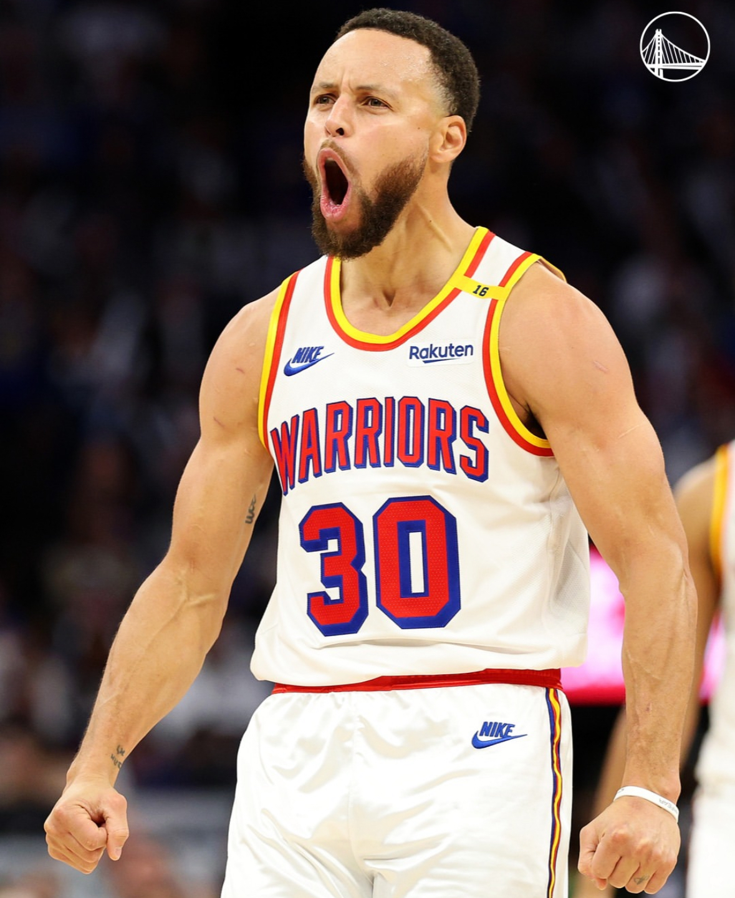
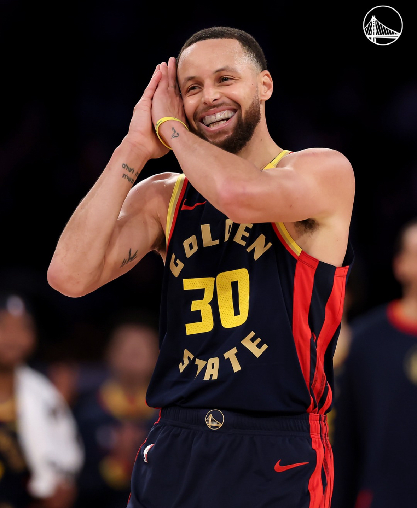
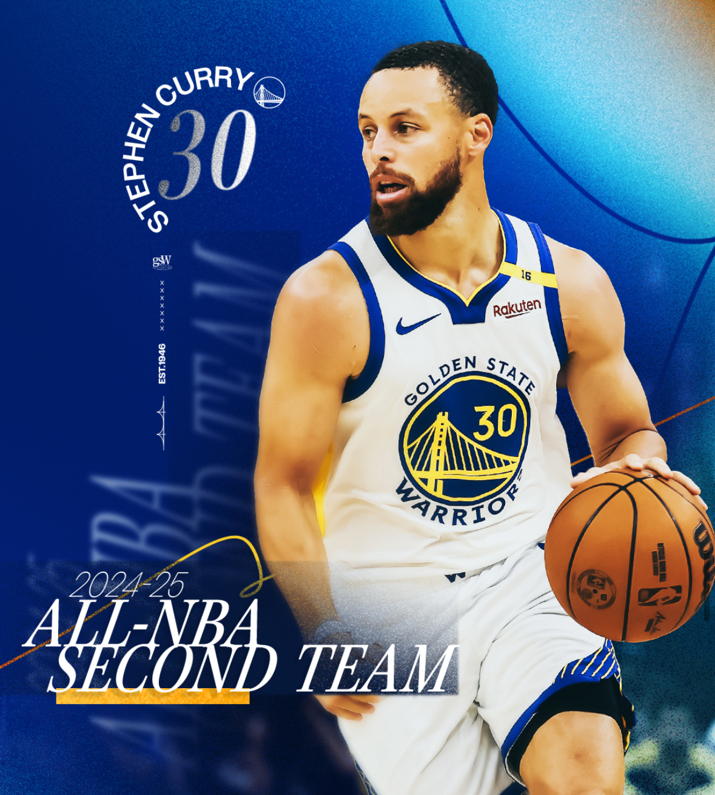
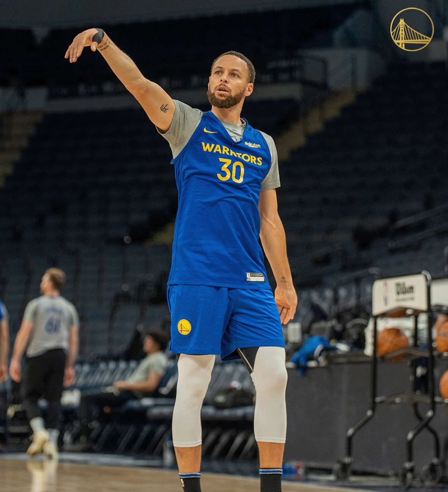

Stephen Curry 소개
기본 정보
커리어 상세
사진 갤러리
사회공헌 활동
레전드 장면

기본 정보
이름: Wardell Stephen Curry II
생년월일: 1988년 3월 14일
출생지: 미국 오하이오주 애크런
키: 188cm
포지션: 포인트 가드 (PG)
소속팀: 골든스테이트 워리어스 (Golden State Warriors)
등번호: 30번
명언
“Success is not an accident, success is actually a choice.”
(성공은 우연이 아니라 선택이다.)
커리어 상세
NBA 챔피언 4회 (2015, 2017, 2018, 2022) - 파이널 평균 득점: 30+ PPG
NBA 정규 시즌 MVP 2회 (2015, 2016) - 2016 시즌 최초 만장일치 MVP
NBA All-Star 선정 10회 이상 - All-Star 3점슛 컨테스트 우승 2회
NBA 역사상 최고의 3점 슈터 - 통산 3점슛 최다 기록 보유 (현재 진행형)
대표 명장면: 2022 파이널 6차전 승리 후 눈물의 세리머니
NBA 75주년 기념 팀 선정
사진 갤러리
  
사회공헌 활동
Eat. Learn. Play. Foundation 설립 (아내 Ayesha와 함께)
아동 교육, 영양 지원, 스포츠 활동 지원 프로그램 운영
코로나19 기간 중 오클랜드 지역 무료 급식 지원
골든스테이트 지역 사회 기부 및 이벤트 참여
레전드 장면
2016 시즌 한 경기 13개 3점슛 신기록
2022 파이널 Game 4, 43득점 폭발
경기 종료 직전 하프라인 3점슛 성공
NBA 통산 3점슛 최다 기록 갱신 (Ray Allen 기록 돌파)